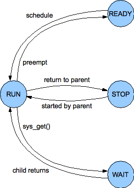

Handed out Tuesday, January 24, 2011
Due Thursday, February 7, 2011
In this lab, you will add the first major OS abstraction to PIOS: processes. Like Unix, PIOS creates a single "root" process on startup and allows that and any subsequent process to create "child" processes, forming a process hierarchy. PIOS's process abstraction is much simpler than Unix's, however: for example, child processes cannot outlive their parents, and processes can directly interact only with their immediate parent and immediate children, not with arbitrary other processes in the system like Unix processes can via pipes or the file system. Philosophically, the PIOS process abstraction follows more of a recursive virtual machine or nested process model, in contrast with Unix's timesharing-oriented job control model.
This lab contains the following four main implementation components:
In this lab you will build on the kernel you started in lab 1. We will also provide you with some additional source code. To fetch the new source code, use Git to commit your Lab 1 source code if you haven't already, then fetch the latest updates from the master Git repository, and then create a local branch called lab2 based on our lab2 branch, which will be named origin/lab2 in your copy of the repository:
$ cd lab $ git commit -am 'my solution to lab1' Created commit 254dac5: my solution to lab1 3 files changed, 31 insertions(+), 6 deletions(-) $ git pull Already up-to-date. $ git checkout -b lab2 origin/lab2 Branch lab2 set up to track remote branch refs/remotes/origin/lab2. Switched to a new branch "lab2"
The git checkout -b command shown above actually does two things: it first creates a local branch lab2 that is based on the origin/lab2 branch provided by the course staff, and second, it changes the contents of your lab directory to reflect the files stored on the lab2 branch. Git allows switching between existing branches using git checkout branch-name, though you should commit any outstanding changes on one branch before switching to a different one.
You will now need to merge the changes you made in your lab1 branch into the new lab2 branch, as follows:
$ git merge lab1 Merge made by recursive. kern/kdebug.c | 11 +++++++++-- kern/monitor.c | 19 +++++++++++++++++++ lib/printfmt.c | 7 +++---- 3 files changed, 31 insertions(+), 6 deletions(-)
In some cases, Git may not be able to figure out how to merge your changes with the new lab assignment (e.g. if you modified some of the code that is changed in the second lab assignment). In that case, the git merge command will tell you which files are conflicted, and you should first resolve the conflict (by editing the relevant files) and then commit the resulting files with git commit -a.
Lab 2 contains the following new source files, which you should browse through and familiarize yourself with:
| inc/syscall.h | Definitions of PIOS system call conventions |
| kern/spinlock.{c,h} | Spinlock-based mutual exclusion module template |
| kern/proc.{c,h} | Process management and scheduling module template |
| kern/syscall.{c,h} | System call handling module template |
| kern/mp.{c,h} | Multiprocessor hardware identification |
| boot/bootother.S | Boot code for CPUs other than CPU 0 |
| dev/pic.{c,h} | Legacy interrupt controller (PIC) driver |
| dev/lapic.{c,h} | Local interrupt controller (LAPIC) driver |
| dev/ioapic.{c,h} | I/O interrupt controller (IOAPIC) driver |
The exact handin procedure is to be determined; we will update this section closer to the lab's due date.
You do not need to turn in answers to any of the questions in the text of the lab. (Do answer them for yourself though! They will help with the rest of the lab.)
We will be grading your solutions with a grading program. You can run make grade to test your solutions with the grading program.
Like xv6, PIOS is a multiprocessor kernel, and will therefore have to use synchronization mechanisms to ensure that different physical CPUs running kernel code concurrently do not accidentally corrupt the kernel's data structures. For now, PIOS will use only one simple synchronization abstraction to protect kernel data structures: the spinlock. Since xv6 also uses spinlocks in the kernel, make sure you have read the xv6 chapter on locking and thoroughly understand how xv6 implements and uses spinlocks before you attempt this part of the lab.
PIOS's use of spinlocks will be different from xv6's in one important way, in terms of how spinlocks relate to interrupt handling. The xv6 kernel can take asynchronous device interrupts while running in either user or kernel mode, and servicing those interrupts often requires acquiring spinlocks. If an interrupt handler were to attempt to acquire a spinlock that the interrupted code already holds, however, then a deadlock would result: the interrupt handler will spin waiting for the "lock holder" to release the lock, but the lock holder is the kernel code that was preempted by the interrupt! So the xv6 spinlock code always disables hardware interrupts when the kernel first takes a spinlock, and re-enables interrupts only after unlocking the last spinlock it is holding, effectively preemption whenever kernel code is holding any spinlock. PIOS, in contrast, simply never enables interrupts in the first place while running in kernel mode, so the spinlock code in PIOS doesn't need to deal with this issue.
PIOS spinlocks are declared in kern/spinlock.h, and support the following four operations:
You will need to implement these four functions. Use the xchg() function in inc/x86.h to provide the atomicity needed when acquiring the spinlock.
You should also use the atomic xchg() instruction to release the lock - in this case not because of the atomicity it provides, but because atomic instructions also prevent the processor from reordering other reads or writes around the atomic instruction, which modern processors often do with normal memory accesses, and such reordering can cause synchronization code to fail if not controlled carefully. See section 7.2, "Memory Ordering", in the IA-32 System Programming Guide for more information.
One further detail about the spin loop itself: while a spinlock will work if you just do nothing in the loop, Intel has defined a special instruction called PAUSE that notifies the processor that a spin loop is in progress and can improve system performance in such cases, especially on "hyper-threaded" processors that multiplex a single execution unit among multiple virtual CPUs. See the x86 manuals for details on this instruction. We have provided a pause() function in inc/x86.h for convenience.
While the main purpose of spinlocks is to ensure mutual exclusion, and that can be accomplished if spinlocks are nothing but a single word in memory, we can make debugging multiprocessor code much easier by instrumenting spinlocks a little. Design your spinlocks so that they:
Exercise 1. Implement spinlocks in PIOS as described above. Make sure your implementation passes the spinlock_check() test provided. But note that this test code only tests basic functionality; it does not verify that your spinlocks are properly atomic and race-free under multiprocessor operation!
Exercise 2. Add a spinlock to kern/console.c, initialized in cons_init(), which prevents the characters output by a cputs() call on one processor from being mingled with those output by another processor. In other words, we want each cputs() call to be atomic: if two CPUs try to print messages at about the same time, we want to see all of one message followed by all of the other, and not a random mix of characters from both messages at once.
Exercise 3. Add mutual exclusion to protect the mem_freelist in kern/mem.c, so that different CPUs can safely call mem_alloc() and mem_free() concurrently without pages being lost or the free list being corrupted.
First familiarize yourself with kern/proc.h and the template code in kern/proc.c. This will be PIOS's main process management and scheduling module.
As mentioned earlier, PIOS processes form a strictly tree-structured process hierarchy. The proc structure contains a parent pointer and up to PROC_CHILDREN (256) child pointers to child processes. The parent pointer is NULL in the root process but valid for all other processes; any child pointer in a proc's child array may be NULL indicating that child does not exist.
|  |
| PIOS Process State Machine |
At a given moment a process may be in any of four states, as defined by the state field in the proc structure and illustrated in the figure to the right:
You will now need to design and implement a simple scheduler. The scheduler can be as simple as keeping all ready processes on a single queue and running them in round-robin order. The main requirements for purposes of this lab are: (a) the scheduler must work correctly, even on a multiprocessor system, and never lose processes or corrupt the ready queue for example; and (b) assuming the scheduler is invoked on a regular basis, it must not "starve" any process of CPU time forever. The second requirement means that while a simple queue structure will work, a stack structure would not for example, because processes pushed more recently on the stack could starve processes pushed earlier forever.
We have declared and provided skeletons for the following scheduling functions; you may add other helper functions and data structures as needed in kern/proc.c and kern/proc.h:
proc_ready(proc *p): Places process p in the PROC_READY state and insert it into the ready queue, so that this or some other CPU will eventually run the process at some future invocation of the scheduler.
proc_sched(void): Remove some process from the ready queue and run it. If the ready queue is currently empty (there is no work to do at the moment), just spin until some other CPU puts some work into the ready queue. (For good measure, use the pause() function discussed above in the ready loop, although this doesn't affect correctness.)
proc_run(proc *p): Place process p in the PROC_RUN state, mark it as running on this CPU, and run it. This function does not return because it is expected to call trap_return() and enter user space to run the process.
proc_yield(trapframe *tf): Put the currently running process on this CPU back in the PROC_READY state and yield its CPU to some other ready process. (The old process could end up yielding to itself if it is the only ready process.) This function is called with a pointer to a trapframe containing the user state of the process that is yielding the CPU, which was typically pushed on the kernel stack on kernel entry. Since the kernel stack is reset on switching to a new process, the old process's state needs to be saved in its proc struct before switching to the new process.
Exercise 4. Implement the above scheduling functions. Then modify init() in kern/init.c so that instead of just conjuring up a trapframe and calling trap_return() directly to enter user space, it calls alloc_proc() to create a "root process", sets up that process's saved EIP and ESP to run the user() function on the user_stack, calls proc_ready() to make the process ready, and finally calls proc_sched() to schedule and run it.
You should now be able to get into user mode via your scheduler, although the root process won't yet be able to create other processes without the system calls to be implemented shortly. You may wish to test your scheduler a bit more thoroughly now by creating several "root" processes, starting them all at once, and ensuring that your schedule correctly picks a separate one to run on each physical CPU. But note that each user process will need its own stack!
Hint: In general, it may make debugging easier if you get your code working first in a uniprocessor environment, by removing the `-smp 2' option from the qemu command line, before trying to get it working in a multiprocessor environment. If you are experiencing a mysterious bug, always check to see if it goes away in uniprocessor mode: if it does, it probably means it's a locking issue; if it doesn't, it'll probably be easier to replicate and debug in the simpler uniprocessor environment.
Challenge: Make your scheduler more powerful by implementing one of the enormous number of prioritization or fair-share scheduling algorithms you can find in textbooks or in the research literature: for example, fixed-priority scheduling, Unix-style variable-priority scheduling, or lottery scheduling.
Challenge: Make your scheduler more scalable by giving each CPU its own dedicated ready queue, so that that CPU can insert and remove ready processes without contending with other CPUs in the common case. You will still need locking, however, because when one CPU's ready queue is empty that CPU's scheduler will have to check other CPUs' ready queues and "steal" processes from them. This technique is called work stealing.
Entering System Calls: When the processor encounters an explicit INT instruction, it behaves in mostly the same way as if it had encountered an exception such as divide-by-zero, with two important differences:
Be sure you thoroughly understand both of these differences in behavior, and the reasons for them! Now we need to think about how PIOS actually processes system calls.
Completing System Calls: When the kernel handles a system call, in the "easy cases" it will complete whatever action the user process requested and then need to resume execution of the user mode process from where it left off. In PIOS, the system call handler does this by calling trap_return().
Given the above considerations regarding the value of EIP that the processor pushes when it successfully executes an INT instruction, does the system call handler need to do anything to the trapframe pushed on entry before calling trap_return() to resume the user process?
Blocking Processes and Restarting System Calls: In the "not so easy" system call handling cases, the kernel may not be able to complete the system call immediately, but instead must block the process until some future event occurs, typically as a result of an action of some other process or an external device. In a process-model kernel like xv6, which maintains a separate kernel stack for each user process, the kernel stack provides a convenient place where the kernel can maintain state pertaining to whatever system call was in progress when the process needed to block: when the necessary "wakeup" condition is satisfied, the process simply resumes executing in the kernel at the intermediate system call processing state represented by the contents of the process's kernel stack.
In an interrupt-model kernel such as PIOS, however, processes do not have kernel stacks, so a blocked process must entirely give up the use of the kernel stack so that the next process to run on the same CPU can use it. So how does the kernel keep track of what it was or is supposed to be doing on behalf of a blocked process? We could add explicit state to the proc structure describe exactly what the kernel was supposed to be doing - e.g., executing user-mode code, or blocked at a particular stage in a particular system call. Keeping track of this complicated state machine can be difficult, however. Another option is to design the kernel's system calls to be simple and semantically atomic - meaning the system call either runs to completion or blocks before changing any user-visible state at all. That way, if a process needs to block waiting for some event to occur, then once the process is woken by the occurrence of that event, the process simply restarts the original system call from scratch - beginning with the original INT instruction executed in user mode. In this design, the only process state that really matters is its user-mode register state, particularly its EIP.
PIOS takes the latter, system call restart approach, because it simplifies kernel state (and can have other kernel design advantages). To implement the restart model, however, you have to think carefully about exactly where you want the user-mode EIP to point when you actually complete a system call, versus what you want the saved EIP to point to when you block the process without completing the system call. Given the EIP that the processor saves in the trapframe when it executes the INT instruction, if the system call handler decides it needs to block the process, does it need to do anything to the trapframe before saving it into the proc structure for use when the processor eventually wakes up and resumes execution? Hint: how long exactly is an INT instruction? (Look it up in the IA-32 manuals if you don't know.)
sys_cputs(const char *s): Print the null-terminated ASCII string s to the console for debugging purposes.
sys_put(uint32_t flags, uint8_t child, cpustate *cpu): Initialize one of the calling process's 256 child process slots, as indicated by child, and optionally start the child process running concurrently with the parent. The flags argument contains a mask of flags defined in inc/syscall.h that modify sys_put's precise behavior as follows:
The kernel shouldn't allow user processes to set all register state in another process: in particular, the kernel should force all the segment registers in the child's trapframe to the usual user-mode code and data segments, and should only allow "non-sensitive" bits in EFLAGS, such as the arithmetic condition code bits, to be set via this system call. Otherwise a process could trick the kernel into "returning" into a kernel-mode segment at an arbitrary EIP specified by the user process, for example. (Think about how you would implement this attack.)
This system call requires the specified child to be in the PROC_STOP state in order to complete. If the specified child process is not already in the stopped state when the parent process makes this system call, the kernel puts the parent process to sleep waiting for the child to stop. In other words, the parent goes into the PROC_WAIT state and sits there until the child enters the PROC_STOP state, at which point the parent wakes up and restarts its PUT system call as described above.
sys_get(uint32_t flags, uint8_t child, cpustate *cpu): Collect information from a child process. As with sys_put(), this system call first waits for the child to stop if the child isn't already in the stopped state. The flags argument again determines exactly what information the parent retrieves from the child. Currently only one flag is supported, although we will add other flags in future labs:
sys_ret(void): Explicitly "returns" from a child process to its parent. The child process goes into the PROC_STOP state, and wakes up its parent if the parent happened to be waiting for this particular child, as a result of either a sys_put() or sys_get().
If the parent subsequently retrieves this process's register state, the tf_trapno field in the returned trapframe should contain T_SYSCALL, indicating that the child "returned" via a system call, and the tf_eip field should point to the next instruction in the child after the system call. This way, a sys_ret() call by a child process doesn't need to "terminate" the child completely: instead, the parent can resume the child at the point in its execution immediately after the sys_ret(), just by calling sys_put() again with the SYS_START flag but without SYS_REGS.
Exercise 5. Implement the above process management system calls. You will first need to modify kern/trap.c to set up a trap entrypoint for the T_SYSCALL vector and make trap() invoke syscall() when that trap occurs. Then fill out the syscall() function in kern/syscall.c; we have oh so generously implemented SYS_CPUTS for you. You will have to design the process management code carefully to interact with your scheduling code in kern/proc.c when putting processes to sleep or waking them up.
Test this code with the first part of proc_check(), which user() calls to check process management. With QEMU emulating 2 CPUs (the default when you type 'make qemu' with our GNUmakefile), your code should be able to get through the spawn/wait test with 2 child processes. The subsequent test with 4 child processes will hang, however, until you implement preemption in the next part (or you can increase the number of emulated CPUs to 4).
Challenge: Implement x87/MMX/XMM FPU state saving and restoring in the kernel, so that user processes can use floating-point arithmetic, and make a process's FPU state accessible to its parent process via sys_put and sys_get with the SYS_FPU flag, which we have defined in inc/syscall.h. We have also provided a structure, fxstate, that is suitable for holding FPU state and laid out in the format required by the processor's convenient FXSAVE and FXRSTOR instructions.
To implement preemption, we need to arrange for an asynchronous timer interrupt to be delivered to each CPU periodically, so that the processor will return control to the kernel and the kernel can schedule and run a different process. In multiprocessor x86 systems, each CPU has a Local Advanced Programmable Interrupt Controller or LAPIC, which can generate such interrupts. We have provided code in dev/lapic.{c,h} to initialize each CPU's LAPIC and enable its periodic timer interrupt. The processor will simply ignore these interrupt requests, however, until the kernel enables interrupts by setting the IF bit in the EFLAGS register. Once interrupts are enabled, timer interrupts will arrive at vector T_IRQ0+IRQ_TIMER. In response, the kernel should place the current process back on the ready queue, and pick and run a new process from the ready queue.
When the kernel takes an asynchronous hardware interrupt, it must signal the hardware that generated the interrupt that the handling of the interrupt is complete: otherwise, the source of the interrupt (in this case the local APIC) would just keep the interrupt request asserted, interrupting the processor again immediately, as soon as its IF flag is set again. This "interrupt clearing" procedure is commonly called an End Of Interrupt or EOI. For interrupts generated by the local APIC, we have provided a function lapic_eoi() to signal the LAPIC that the timer interrupt has been handled.
As described in Section 8.9 of the IA-32 System Programming Guide, certain corner-case timing situations can cause the Local APIC to generate a spurious interrupt. Our local APIC setup code directs such interrupts to interrupt vector T_IRQ0+IRQ_SPURIOUS; you should catch interrupts arriving at this vector and simply do a trap_return() without an EOI, as specified in the IA-32 manual. You may want to print a message to a console on a spurious interrupt, since they're not likely to happen often and if/when it does you probably want to know so that you can tell whether your spurious interrupt handler is working.
Exercise 6. Implement preemption in PIOS. You will need to create entrypoints for the Timer IRQ and Spurious Interrupt vectors, and handle them in trap().
You will also need to turn on the Interrupt Flag in order to allow the processor to take timer interrupts. Keep in mind, however, that the PIOS kernel assumes that the processor takes asynchronous hardware interrupts only when running in user mode, never while while running in kernel mode (as xv6 allows). You must be careful to preserve this design convention, otherwise the kernel will get very confused when it tries to preempt itself. How do you cause the IF flag to be set only while the processor is running in user mode? (Hint: the write_eflags() function in inc/x86.h is not what you want.)
Once you get interrupts working, your code should be able to get through the part of proc_chec() that uses 4 child processes, even when running on the default 2-CPU SMP configuration (or even a 1-CPU uniprocessor QEMU configuration).
Exercise 7. Implement reflection for processor exceptions in the x86 architecture-defined vector range of 0 through 31, but only if the exception occurs in user mode. (Exceptions in this range that occur in kernel mode still probably represent bugs and should cause a panic with a backtrace.) We have declared and provided a skeleton function proc_ret() in kern/proc.c, which is intended to handle either "explicit returns" via sys_ret() or "implicit returns" via other traps from user mode.
Your kernel should now be able to pass the entire proc_check() test, including its test of reflection for several types of traps. Run make grade to make sure the whole test suite for lab 2 comes out right.
This completes the lab.